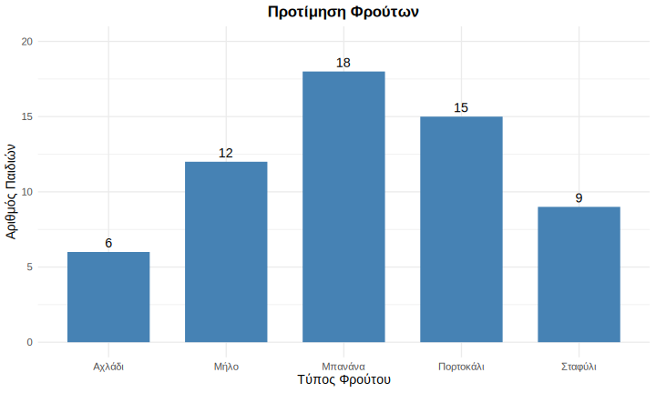
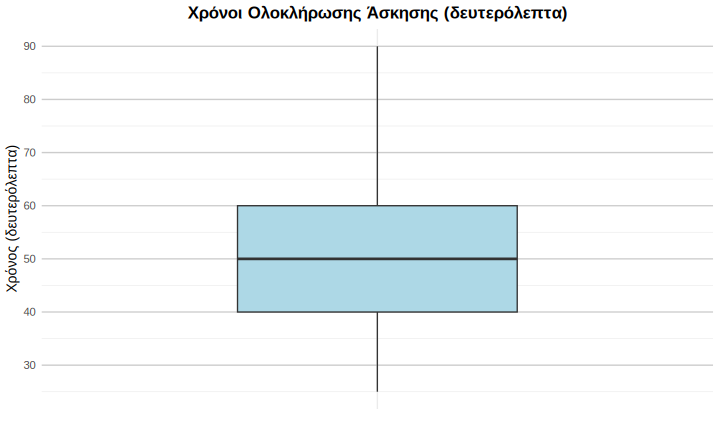

Στατιστική στην Εκπαιδευτική Έρευνα
2026-01-08
Τυχαίες μεταβλητές
Βασικές στατιστικές έννοιες
Στατιστική: μέθοδοι για οργάνωση, σύνοψη και ερμηνεία δεδομένων από μια μελέτη στην εκπαίδευση.
- Πληθυσμός: Όλα τα άτομα που μας ενδιαφέρουν (π.χ. όλοι/όλες οι μαθητές/τριες νηπιαγωγείων της Δυτικής Μακεδονίας).
- Δείγμα: Υποσύνολο του πληθυσμού, επιλεγμένο για να τον αντιπροσωπεύσει.
Βασικές στατιστικές έννοιες
- Παράμετρος: Χαρακτηριστικό του πληθυσμού (άγνωστο αλλά μετρήσιμο).
- Στατιστικό: Μαθηματικός συνδυασμός μετρήσεων στο δείγμα (π.χ. μέσος όρος).
Μεταβλητές
- Μεταβλητή: μετρήσιμο χαρακτηριστικό που παίρνει διαφορετικές τιμές.
- Διακριτές: τιμές σε διακριτές κατηγορίες (π.χ. δήμος, πλήθος παιδιών ανά τμήμα).
- Συνεχείς: οποιαδήποτε τιμή σε ένα διάστημα (π.χ. ύψος/βάρος παιδιού).
Κλίμακες μέτρησης
- Μέτρηση είναι η διαδικασία με την οποία αποδίδουμε τιμές σε μεταβλητές.
- Οι τιμές αυτές εξαρτώνται από το είδος της κλίμακας που χρησιμοποιούμε.
- Η επιλογή της κατάλληλης κλίμακας επηρεάζει άμεσα το είδος των στατιστικών μεθόδων που μπορούμε να εφαρμόσουμε.
Ονομαστική κλίμακα
- Οι τιμές είναι ονόματα κατηγοριών.
- Οι κατηγορίες είναι διακριτές και όχι συγκρίσιμες (δεν υπάρχει σειρά ή διάταξη μεταξύ τους)
- Παράδειγμα: τόπος κατοικίας (π.χ. Φλώρινα, Καστοριά, Κοζάνη)
- Μπορεί να χρησιμοποιηθούν αριθμοί για κωδικοποίηση, αλλά δεν έχουν ποσοτική σημασία (π.χ. 1 = Φλώρινα, 2 = Καστοριά).
Διατάξιμη κλίμακα
- Οι τιμές αντιστοιχούν σε διακριτές κατηγορίες με φυσική διάταξη.
- Μπορούμε να πούμε ποια τιμή είναι “μεγαλύτερη” ή “μικρότερη”, αλλά όχι πόσο μεγαλύτερη.
- Παράδειγμα: οικονομική κατάσταση οικογένειας μαθητών (χαμηλή, μέτρια, υψηλή).
- Η σειρά έχει νόημα, αλλά οι διαφορές μεταξύ κατηγοριών δεν είναι μετρήσιμες.
Ισοδιαστημική κλίμακα
- Οι τιμές είναι αριθμητικές, με ίσα διαστήματα μεταξύ τους.
- Επιτρέπεται η σύγκριση διαφορών (π.χ. πόσο αυξήθηκε ή μειώθηκε κάτι)
- Ωστόσο, το μηδέν είναι αυθαίρετο· δεν υποδηλώνει “απουσία”
- Παράδειγμα: θερμοκρασία σε βαθμούς Κελσίου ή Φάρεναϊτ
Αναλογική κλίμακα
- Είναι ισοδιαστημική με απόλυτο μηδέν.
- Το μηδέν σημαίνει απουσία του χαρακτηριστικού που μετράμε.
- Επιτρέπεται η σύγκριση λόγων (π.χ. “διπλάσιο”, “μισό”).
- Παράδειγμα: ύψος, βάρος, διάρκεια, απόσταση.
Ερωτήσεις
Ερώτηση 1
Μια ερευνήτρια μετρά το ύψος παιδιών σε εκατοστά (π.χ. 95cm, 102cm, 98cm) και στη συνέχεια τα κατατάσσει σε τρεις κατηγορίες: “κοντά”, “μεσαία”, “ψηλά”. Τι έγινε με την κλίμακα μέτρησης;
- α) Παρέμεινε αναλογική
- β) Μετατράπηκε από αναλογική σε ισοδιαστηματική
- γ) Μετατράπηκε από αναλογική σε διατακτική
- δ) Μετατράπηκε από ισοδιαστηματική σε ονομαστική
Η απάντηση είναι το (γ)
Επεξήγηση:
Το ύψος σε cm είναι αναλογική μεταβλητή (έχει απόλυτο μηδέν). Όταν το κατατάσσουμε σε κατηγορίες με σειρά, γίνεται διατακτική. Χάνουμε πληροφορία!
Ερώτηση 2
Μια νηπιαγωγός αξιολογεί την κοινωνική αλληλεπίδραση παιδιών με κλίμακα: “καθόλου αλληλεπίδραση”, “λίγη αλληλεπίδραση”, “μέτρια αλληλεπίδραση”, “πολλή αλληλεπίδραση”. Τι είδους μεταβλητή είναι;
- α) Ονομαστική
- β) Διατάξιμη
- γ) Ισοδιαστηματική
- δ) Αναλογική
Η απάντηση είναι το (β)
Επεξήγηση:
Υπάρχει σαφής σειρά, αλλά τα διαστήματα δεν είναι απαραίτητα ίσα. Η διαφορά “καθόλου” και “λίγη” μπορεί να είναι διαφορετική από τη διαφορά “λίγη” και “μέτρια”.
Ερώτηση 3
Σε ποια μεταβλητή έχει νόημα να πούμε ότι μια τιμή είναι “διπλάσια” από μια άλλη;
- α) Η θερμοκρασία αίθουσας σε °C
- β) Το έτος γέννησης παιδιού
- γ) Ο χρόνος προσοχής παιδιού σε δευτερόλεπτα
- δ) Η βαθμολογία ικανοποίησης γονέα (κλίμακα 1-5)
Η απάντηση είναι το (γ)
Επεξήγηση:
Μόνο σε αναλογικές μεταβλητές έχουν νόημα οι αναλογίες. 60 δευτερόλεπτα είναι όντως διπλάσια από 30 δευτερόλεπτα. Για θερμοκρασία °C ή βαθμολογίες δεν ισχύει αυτό.
Συχνότητα
(Απόλυτη) συχνότητα
Συχνότητα μιας τιμής είναι το πόσες φορές εμφανίζεται η τιμή αυτή σε ένα δείγμα.
- \(\sum f = N\)
- \(\sum f\tilde{X} = \sum X\)
Σχετική συχνότητα
- Μετράει το μέρος (κλάσμα) του δείγματος που αντιστοιχεί σε μια τιμή:
\[ f_r = \frac{f}{N} \]
- \(0 \leq f_r \leq 1\)
- \(\sum f_r = 1\)
Ποσοστιαία συχνότητα
Μετατροπή της σχετικής συχνότητας σε ποσοστό: \[ f_{\%} = 100 \times f_r = 100 \times \frac{f}{N} \]
\(0 \leq f_{\%} \leq 100\)
\(\sum f_{\%} = 100\)
Ομαδοποιημένες Συχνότητες
- Όταν οι πιθανές τιμές είναι πολλές, ομαδοποιούμε σε διαστήματα
- Συνήθως έχει νόημα στην περίπτωση συνεχών τυχαίων μεταβλητών.
Καλές πρακτικές:
- ~ 10 ομαδοποιήσεις (όχι λίγες/πολλές)
- Απλό πλάτος (π.χ. 5, 10)
- Πλήρης κάλυψη του εύρους τιμών χωρίς κενά/επικαλύψεις
Ραβδογράμματα
Το ραβδόγραμμα χρησιμοποιείται για ποιοτικές ή διακριτές ποσοτικές μεταβλητές. Κάθε κατηγορία ή τιμή απεικονίζεται με μια ξεχωριστή ράβδο.
- Ο άξονας x δείχνει τις κατηγορίες ή τις τιμές.
- Ο άξονας y δείχνει τη συχνότητα ή τη σχετική συχνότητα.
- Οι ράβδοι δεν εφάπτονται μεταξύ τους.
Ιστογράμματα
Το ιστόγραμμα απεικονίζει ομαδοποιημένα ποσοτικά δεδομένα.
Οι τιμές χωρίζονται σε ομάδες (διαστήματα) και κάθε ομάδα εκπροσωπείται από ένα ορθογώνιο του οποίου το ύψος είναι η συχνότητα.
- Οι στήλες ακουμπούν μεταξύ τους (τα διαστήματα είναι συνεχόμενα)
Πολύγωνο συχνοτήτων
- Σημειώνουμε το κέντρο κάθε κλάσης.
- Συνδέουμε τα σημεία κατά σειρά → πολύγωνο.
- Χρήσιμο για σύγκριση δύο κατανομών στο ίδιο γράφημα.
Ερωτήσεις
Ερώτηση 1
Ο παρακάτω πίνακας δείχνει τον αριθμό αδελφών που έχουν τα παιδιά μιας τάξης. Συμπληρώστε τις τιμές που λείπουν:
| Αριθμός Αδελφών | Συχνότητα (f) | Σχετική Συχνότητα | Ποσοστό (%) |
|---|---|---|---|
| 0 | 5 | 0.20 | 20% |
| 1 | (α) | 0.40 | (β) |
| 2 | 7 | (γ) | 28% |
| 3 | 3 | 0.12 | 12% |
| Σύνολο | (δ) | 1.00 | 100% |
Απαντήσεις
- (α): 10
- (β): 40%
- (γ): 0.28
- (δ): 25
Ερώτηση 2
Ένας φοιτητής δημιούργησε τον παρακάτω πίνακα, αλλά έκανε ΕΝΑ λάθος. Ποιο είναι;
| Ηλικία Παιδιού | f | Σχετική Συχνότητα | Ποσοστό |
|---|---|---|---|
| 3 | 12 | 0.24 | 24% |
| 4 | 18 | 0.36 | 36% |
| 5 | 15 | 0.30 | 30% |
| 6 | 5 | 0.12 | 10% |
| Σύνολο | 50 | 1.02 | 100% |
Απάντηση
Το λάθος έγινε στη σχετική συχνότητα για την ηλικία 6 ετών. Έπρεπε να είναι 0.10.
Ερώτηση 3
Με βάση το ραβδόγραμμα να συπληρωθεί ο πίνακας συχνοτήτων:
Σχήμα 1: Προτίμηση φρούτων από παιδιά νηπιαγωγείου
| Φρούτο | Συχνότητα (f) | Σχετική Συχνότητα | Ποσοστό (%) |
|---|---|---|---|
| Μήλο | ? | ? | ? |
| Μπανάνα | 18 | ? | 30% |
| Πορτοκάλι | 15 | 0.25 | ? |
| Σταφύλι | ? | 0.15 | 15% |
| Αχλάδι | 6 | ? | ? |
| Σύνολο | ? | 1.00 | 100% |
Απάντηση
| Φρούτο | Συχνότητα (f) | Σχετική Συχνότητα | Ποσοστό (%) |
|---|---|---|---|
| Μήλο | 12 | 0.20 | 20% |
| Μπανάνα | 18 | 0.30 | 30% |
| Πορτοκάλι | 15 | 0.25 | 25% |
| Σταφύλι | 9 | 0.15 | 15% |
| Αχλάδι | 6 | 0.10 | 10% |
| Σύνολο | 60 | 1.00 | 100% |
Μέτρα θέσης
Γενικά
- Μέσος όρος: Ο αριθμητικός μέσος όρος. Ευαίσθητος σε ακραίες τιμές.
- Διάμεσος: Η μεσαία τιμή. Ανθεκτική σε ακραίες τιμές.
Αυτά τα μέτρα μας λένε πού βρίσκεται το «κέντρο» των δεδομένων μας.
Μέσος όρος
Για τιμές \(x_1, x_2, \dots, x_n\):
\[ \bar{x}=\frac{1}{n}\sum_{i=1}^{n} x_i = \frac{x_1+x_2+\dots + x_n}{n} \]
- Χρησιμοποιείται για ισοδιαστημικές/αναλογικές μεταβλητές
- Ευαίσθητος στις ακραίες τιμές
Διάμεσος
Η μεσαία τιμή μιας μεταβλητής.
Υπολογισμός:
- Ταξινομούμε τις τιμές σε αύξουσα σειρά
- Αν \(n\) είναι περιττός αριθμός: η μεσαία τιμή
- Αν \(n\) είναι άρτιος (ζυγός) αριθμός: ο μέσος όρος των δύο μεσαίων
Εκατοστημόρια
Τα εκατοστημόρια είναι μέτρα σχετικής θέσης.
Μας λένε πού βρίσκεται μια συγκεκριμένη τιμή σε σχέση με τις υπόλοιπες τιμές του συνόλου δεδομένων.
Ορισμός
Το \(k\)-οστό εκατοστημόριο (συμβολίζεται \(P_k\)) είναι η τιμή κάτω από την οποία βρίσκεται το \(k\%\) των παρατηρήσεων.
Εκατοστημόρια
Υπάρχουν κάποιες ειδικές, πολύ συνηθισμένες περιπτώσεις:
- Διάμεσος:
- Είναι το \(P_{50}\) (το 50ό εκατοστημόριο).
- Χωρίζει τα δεδομένα σε δύο ίσα μέρη.
Εκατοστημόρια - Τεταρτημόρια
- Τεταρτημόρια:
- Χωρίζουν τα δεδομένα σε τέσσερα ίσα μέρη.
- \(Q_1\) (Πρώτο Τεταρτημόριο) = \(P_{25}\)
- \(Q_2\) (Δεύτερο Τεταρτημόριο) = \(P_{50}\) (η Διάμεσος)
- \(Q_3\) (Τρίτο Τεταρτημόριο) = \(P_{75}\)
Ερωτήσεις
Ερώτηση 1
Ένα παιδί βρίσκεται στο 90ό εκατοστημόριο για το ύψος του. Ποιες από τις παρακάτω δηλώσεις είναι ΣΩΣΤΕΣ/ΛΑΘΟΣ;
- α) Το παιδί είναι ψηλότερο από το 90% των παιδιών της ηλικίας του
- β) Το 10% των παιδιών είναι ψηλότερα από αυτό το παιδί
- γ) Το παιδί έχει ύψος 90 cm
- δ) Το παιδί βρίσκεται στο 10% των πιο ψηλών παιδιών
Απαντήσεις
α) Σ, β) Σ, γ) Λ, δ) Σ
Ερώτηση 2
Οι βαθμολογίες παιδιών και οι συχνότητές τους είναι βρίσκονται στον παρακάτω πίνακα. Υπολογίστε τον μέσο όρο και τη διάμεσο.
| Βαθμός | Συχνότητα (f) |
|---|---|
| 5 | 3 |
| 6 | 5 |
| 7 | 8 |
| 8 | 4 |
Απαντήσεις
Μέσος όρος:
\[\bar{x} = \frac{5(3) + 6(5) + 7(8) + 8(4)}{20} = \frac{15 + 30 + 56 + 32}{20} = \frac{133}{20} = \mathbf{6.65}\]
β) Διάμεσος:
- n = 20 (άρτιος), άρα διάμεσος = μέσος των θέσεων 10 και 11
- Θέσεις 1-3: βαθμός 5
- Θέσεις 4-8: βαθμός 6
- Θέσεις 9-16: βαθμός 7
- Θέσεις 10 και 11 έχουν και οι δύο βαθμό 7
- Διάμεσος = 7
Μέτρα διασποράς
Εύρος
Το εύρος είναι το πιο απλό από τα μέτρα διασποράς και υπολογίζεται ως η διαφορά μεταξύ της μέγιστης και της ελάχιστης τιμής μίας μεταβλητής.
\[ R = max(X) - min(X) \]
Το έυρος, αν και είναι πάρα πολύ εύκολο να υπολογιστεί, δυστυχώς είναι πολύ ευαίσθητο σε ακραίες τιμές.
Ενδοτεταρτημοριακό εύρος
Η ιδέα είναι ίδια με αυτή του εύρους, ωστόσο, υπολογίζουμε τη διαφορά μεταξύ του πρώτου και του τρίτου τερτημορίου των τιμών μιας μεταβλητής.
\[ IQR = Q3-Q1 = P_{75} - P_{25} \]
Το ενδοτεταρτημοριακό εύρος δε μας δίνει πόσο απέχουν μεταξύ τους η ελάχιστη και η μέγιστη τιμή των μετρήσεων μιας μεταβλητής αλλά την απόσταση μεταξύ δύο τιμών ανάμεσα στις οποίες βρίσκεται το 50% των (μεσαίων) μετρήσεων μιας μεταβλητής.
Απόκλιση
- Απόκλιση είναι η απόσταση μιας παρατήρησης (\(x_i\)) από τη μέση τιμή (\(μ\))
- Απόκλιση = \(x_i - \mu\)
Πρόβλημα: Το άθροισμα των αποκλίσεων είναι πάντα μηδέν.
Τετράγωνο των αποκλίσεων
Για να λύσουμε το πρόβλημα με τις αρνητικές τιμές, υψώνουμε κάθε απόκλιση στο τετράγωνο.
Άθροισμα Τετραγώνων (Sum of Squares - \(SS\)): \[ SS = \sum_{i=1}^n (x_i - \mu)^2 \]
Διασπορά
Η Διασπορά είναι απλά η μέση τετραγωνική απόκλιση.
- Βρίσκουμε το “μέσο όρο” των τετραγωνικών αποκλίσεων.
- Διαιρούμε το Άθροισμα Τετραγώνων (\(SS\)) με το μέγεθος του δείγματος (\(n\)).
\[ s^2 = \frac{\sum_{i=1}^n(x_i - \mu)^2}{n} = \frac{SS}{n} \]
Τυπική απόκλιση
- Η μονάδα μέτρησης της διασποράς είναι “τετραγωνική”
- Παίρνουμε την τετραγωνική ρίζα της διασποράς για να επιστρέψουμε στις αρχικές μονάδες μέτρησης.
- Αυτό είναι η τυπική απόκλιση.
Ορισμός: \[ s = \sqrt{s^2} = \sqrt{\frac{\sum_{i = 1}^n (x_i - \mu)^2}{n}} \]
Διόρθωση για δείγματα
Διασπορά:
\[ s^2 = \frac{\sum_{i=1}^n (x_i - \bar{x})^2}{n - 1} = \frac{SS}{n - 1} \]
Τυπική απόκλιση: \[ s = \sqrt{s^2} = \sqrt{\frac{\sum_{i = 1}^n(x_i - \bar{x})^2}{n - 1}} \]
Ερωτήσεις
Ερώτηση 1
Οι ηλικίες (σε μήνες) 6 παιδιών είναι:
48, 50, 49, 51, 50, 48Ένα νέο παιδί μπαίνει στην τάξη με ηλικία 72 μήνες. Τι συμβαίνει με το εύρος και το IQR;
- α) Και το εύρος και το IQR αυξάνονται σημαντικά
- β) Το εύρος αυξάνεται σημαντικά, το IQR μένει (περίπου) το ίδιο
- γ) Το IQR αυξάνεται σημαντικά, το εύρος μένει το ίδιο
- δ) Και τα δύο μένουν το ίδιο
Η απάντηση είναι το (β)
Επεξήγηση:
- Αρχικό εύρος: R = 51 - 48 = 3
- Με το νέο παιδί: R = 72 - 48 = 24
- Το IQR εξαρτάται από το \(Q_1\) και \(Q_3\), όχι από τις ακραίες τιμές
- Το IQR παραμένει σχεδόν το ίδιο γιατί το 72 επηρεάζει μόνο την ουρά της κατανομής
Ερώτηση 2
Ερώτηση 2
Με βάση το θηκόγραμμα:
- α) Ποιο είναι το IQR;
- β) Τι ποσοστό των παιδιών ολοκλήρωσε την άσκηση μεταξύ 40 και 60 δευτερολέπτων;
Απαντήσεις
α) 20, β) 50%
Ερώτηση 3
Ποιο από τα παρακάτω σύνολα δεδομένων έχει IQR = 0 αλλά όχι s² = 0;
- α) 5, 5, 5, 5, 5, 5, 5
- β) 1, 5, 5, 5, 5, 5, 9
- γ) 3, 4, 5, 6, 7
- δ) Κανένα - αν IQR = 0 τότε πάντα s² = 0
Η σωστή απάντηση είναι το (β)
Μέρος Β: Έλεγχος Υποθέσεων
Τυπικό σφάλμα
Το τυπικό σφάλμα της εκτίμησης \(\bar{x}\) δίνεται από τον τύπο:
\[ \text{se} = \frac{s}{\sqrt{n}} \]
Ενδεχόμενα και πιθανότητες
Ενδεχόμενο:
Κάτι που μπορεί να συμβεί. Για παράδειγμα, να φέρω γράμματα αν “στρίψω” ένα νόμισμα.
Πιθανότητα:
Πόσο συχνά συμβαίνει ένα συγκεκριμένο ενδεχόμενο σε σχέση με όλα τα υπόλοιπα δυνατά ενδεχόμενα.
Κατανομή πιθανοτήτων
Η κατανομή πιθανοτήτων μας δίνει τις πιθανότητες για κάθε πιθανό ενδεχόμενο.
Κανονική κατανομή
Οι συνεχείς μεταβλητές ακολουθούν συχνά την κανονική κατανομή.
Ιδιότητες:
- Συμμετρική γύρω από τη μέση τιμή
- 68% των τιμών βρίσκονται εντός ±1 τυπικής απόκλισης
- 95% των τιμών βρίσκονται εντός ±2 τυπικών αποκλίσεων
- 99.7% των τιμών βρίσκονται εντός ±3 τυπικών αποκλίσεων
Τυπικές τιμές (z-scores)
Έστω ότι έχω την τυχαία μεταβλητή \(X\). Η μεταβλητή αυτή έχει:
- Μία πραγματική μέση τιμή \(\mu\).
- Μία πραγματική τυπική απόκλιση \(\sigma\).
Η μετατροπή: \[ z = \frac{X-\mu}{\sigma} \]
ονομάζεται τυπική τιμή (z-score)
Ιδιότητες z-scores
Οι τυπικές τιμές έχουν ορισμένες πολύ χρήσιμες ιδιότητες:
- Έχουν μέση τιμή 0
- Έχουν τυπική απόκλιση 1
- Ακολουθούν την ίδια κατανομή με την τυχαία μεταβλητή \(X\)
Έλεγχος υποθέσεων - Ορισμός
Ορισμός
Έλεγχος μίας υπόθεσης είναι μία στατιστική μέθοδος που χρησιμοποιεί τα δεδομένα ενός δείγματος για να αξιολογήσει μία υπόθεση για τον πληθυσμό
Βήμα 1: Διατύπωση υποθέσεων
Το βήμα αυτό περιλαμβάνει τον ορισμό δύο συμπληρωματικών υποθέσεων:
- \(H_0\): Η μηδενική υπόθεση συνήθως λέει ότι δεν υπάρχει αλλαγή/διαφορά στον πληθυσμό.
- \(H_1\): Η εναλλακτική υπόθεση είναι το συμπλήρωμα της \(H_0\). Συνήθως, αποτυπώνει την περίπτωση να υπάρχει μία αλλαγή/διαφορά/σχέση.
Βήμα 2: Το στατιστικό
Ορισμός
Στατιστικό ονομάζεται οποιαδήποτε μαθηματική έκφραση περιλαμβάνει αριθμούς και τυχαίες μεταβλητές.
Η τυπική τιμή είναι ένα στατιστικό.
Τα στατιστικά έχουν κατανομές.
Βήμα 3: Επίπεδο σημαντικότητας
Το επίπεδο σημαντικότητας ορίζει πόσο μακριά ανεχόμαστε να “πέσει” η μέτρηση στο δείγμα μας από την τιμή που ελέγχουμε.
Αν πούμε ότι πιθανότητα εμφάνισης μιας τέτοιας τιμής κάτω από 5% είναι απαράδεκτη, τότε το επίπεδο σημαντικότητας είναι 0.05 (\(\alpha = 0.05\))
Βήμα 4: Απόφαση
Συγκρίνουμε την τιμή του στατιστικού με τις κρίσιμες τιμές που προκύπτουν από την κατανομή του στατιστικού.
Αν η τιμή του στατιστικού πέσει στην περιοχή απόρριψης, απορρίπτουμε την \(H_0\).
Σφάλματα στον έλεγχο υποθέσεων
Ορισμός
Το Σφάλμα Τύπου I συμβαίνει όταν ο/η ερευνητής/τρια απορρίπτει την \(H_0\), όταν στην πραγματικότητα αυτή είναι αληθής.
Η στάθμη σημαντικότητας για έναν έλεγχο υποθέσεων είναι η πιθανότητα ο έλεγχος να καταλήξει σε Σφάλμα Τύπου I.
Σφάλματα στον έλεγχο υποθέσεων
Ορισμός
Το Σφάλμα Τύπου II συμβαίνει όταν ο/η ερευνητής/τρια αποτυγχάνει να απορρίψει την \(H_0\), όταν στην πραγματικότητα αυτή δεν είναι αληθής.
t-test με ένα δείγμα
Το στατιστικό του ελέγχου είναι:
\[ t = \frac{\bar{x} - \mu}{\frac{s}{\sqrt{n}}} \sim t_{n-1} \]
όπου \(t_{n-1}\) είναι η κατανομή Student με \(n-1\) βαθμούς ελευθερίας.
Κατανομή Student
Η κατανομή Student:
- Μοιάζει με την κανονική κατανομή
- Έχει “παχύτερες ουρές” για μικρό \(n\)
- Καθώς το \(n\) αυξάνεται, πλησιάζει την κανονική κατανομή
t-test ανεξάρτητων δειγμάτων
Χρησιμοποιείται για τη σύγκριση δύο ανεξάρτητων ομάδων.
Υποθέσεις: \[H_0: \mu_1 = \mu_2\] \[H_1: \mu_1 \neq \mu_2\]
Το στατιστικό - ανεξάρτητα δείγματα
\[ t = \frac{(\bar{x}_1 - \bar{x}_2) - (\mu_1 - \mu_2)}{se_{(\bar{x}_1-\bar{x}_2)}} \sim t_{n_1+n_2-2} \]
Το τυπικό σφάλμα υπολογίζεται με τη συγκεντρωτική διασπορά:
\[ se_{(\bar{x}_1-\bar{x}_2)} = \sqrt{\frac{s^2_p}{n_1}+ \frac{s^2_p}{n_2}} \]
Συγκεντρωτική διασπορά
\[ s_p^2 = \frac{\sum (x_i - \bar{x}_1)^2 + \sum (x_i - \bar{x}_2)^2}{n_1 + n_2 - 2} \]
t-test εξαρτημένων δειγμάτων
Χρησιμοποιείται όταν μετράμε την ίδια ομάδα δύο φορές (π.χ. πριν και μετά από μια παρέμβαση).
Βήμα 1: Υπολογίζουμε τις διαφορές \(d_i = x_{μετά,i} - x_{πριν,i}\)
Βήμα 2: Εφαρμόζουμε t-test με ένα δείγμα στις διαφορές
Το στατιστικό - εξαρτημένα δείγματα
\[ t = \frac{\bar{d} - \mu_d}{se} \sim t_{n - 1} \]
όπου: \[ se = \frac{s_d}{\sqrt{n}} \]
και \(s_d\) είναι η τυπική απόκλιση των διαφορών.
Ερμηνεία αποτελεσμάτων
Αν απορρίψουμε την \(H_0\):
- Υπάρχουν στατιστικά σημαντικά στοιχεία για διαφορά/αλλαγή
- Αυτό δεν σημαίνει απαραίτητα πρακτική σημαντικότητα
Αν δεν απορρίψουμε την \(H_0\):
- Δεν υπάρχουν επαρκή στοιχεία για διαφορά
- Αυτό δεν αποδεικνύει ότι δεν υπάρχει διαφορά
Ερωτήσεις
Ερώτηση 1: Τυπικό Σφάλμα
Δύο ερευνητές μέτρησαν τη μέση βαθμολογία παιδιών σε δύο διαφορετικά δείγματα:
Ερευνητής Α: n = 25, s = 10
Ερευνητής Β: n = 100, s = 10
Ποιος έχει μικρότερο τυπικό σφάλμα στην εκτίμησή του;
- α) Ερευνητής Α
- β) Ερευνητής Β
- γ) Έχουν το ίδιο τυπικό σφάλμα
- δ) Δεν μπορούμε να το προσδιορίσουμε
Σωστή απάντηση είναι το (β)
- Ερευνητής Α: \(se = \frac{10}{\sqrt{25}} = \frac{10}{5} = 2\)
- Ερευνητής Β: \(se = \frac{10}{\sqrt{100}} = \frac{10}{10} = 1\)
Ερώτηση 2
Ένα παιδί έχει z-score = 2 σε τεστ νοημοσύνης. Τι σημαίνει αυτό;
- α) Το παιδί πήρε βαθμό 2/100
- β) Το παιδί είναι 2 τυπικές αποκλίσεις πάνω από το μέσο όρο
- γ) Το παιδί είναι 2 μονάδες πάνω από το μέσο όρο
- δ) Το παιδί ανήκει στο 2% των παιδιών
Σωστή απάντηση είναι το (β)
\(z = \frac{X - \mu}{\sigma} = 2\) σημαίνει ότι η τιμή X είναι 2 τυπικές αποκλίσεις πάνω από τη μέση τιμή
Ερώτηση 3
Ένας ερευνητής ορίζει α = 0.01 αντί για α = 0.05. Τι σημαίνει αυτό;
- α) Είναι λιγότερο πιθανό να απορρίψει την \(H_0\)
- β) Είναι πιο πιθανό να απορρίψει την \(H_0\)
- γ) Είναι πιο πιθανό να κάνει Σφάλμα Τύπου I
- δ) Η απόφασή του δεν επηρεάζεται
Σωστή απάντηση είναι το (α)
Ερώτηση 4
5 παιδιά εξετάστηκαν πριν και μετά από παρέμβαση. Ελέγξτε την αποτελεσματικότητά της.
| Παιδί | Πριν | Μετά |
|---|---|---|
| 1 | 10 | 15 |
| 2 | 12 | 16 |
| 3 | 14 | 18 |
| 4 | 11 | 17 |
| 5 | 13 | 16 |
Ευχαριστώ

Πανεπιστήμιο Δυτικής Μακεδονίας · Παιδαγωγικό Τμήμα Νηπιαγωγών